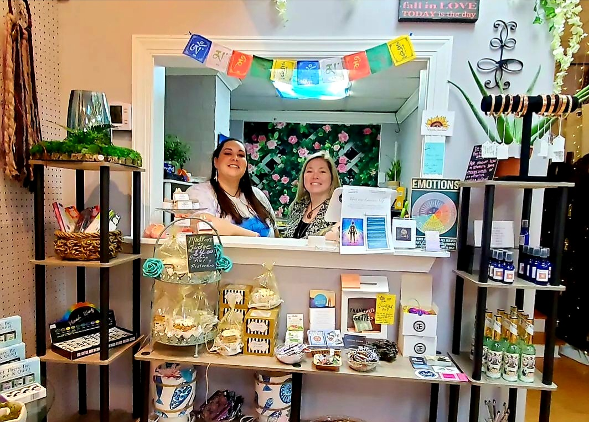

Harnett County raised, graduating from Harnett
Central High School in 2003, I went on to earn a Bachelor's of
Science in Biochemistry from NC State University, Cum Laude. I
worked in biomedical research for nearly 15 years, until I left my
career in 2020 to answer my calling to be of service to others more
spiritually.
I am a skilled intuitive, Reiki practitioner, Shamanic
practitioner, and Archangelic Light practitioner. I offer intuitive
counsel and energy healing in both remote and in-person sessions.
Virgo. Creator. Lover of nature. Modern Mystic. Works with Earth energy; crystals, plants, herbs, botanicals, essential oils, tinctures, teas. Founder/Owner of Gem Fusion and Zenciety.
